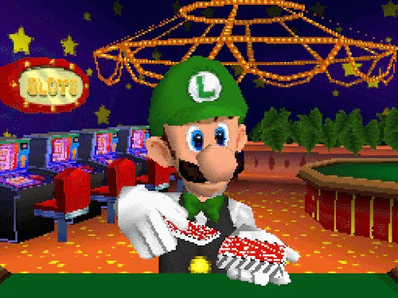
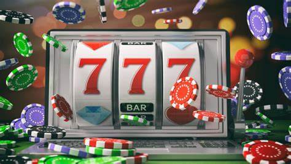

Online gambling is a easier way to gamble. Online gambling is more dangerous than normal gambling because of the ease of access and the lack of control over it. One of the ways online casinos make you spend alot of money is by having a credit system. a credit system or credit card system make it easier to spend money.
ur brain doesnt really process the amount of money ur actually spending it just thinks that ur spending the credit that you have which makes it easier to keep going.

you might know about Luigi's gambling from mario 64 a game made for kids but nowadays its normal for kids to online gambling from a very young age. take roblox as an example alot of roblox games have a gacha system where kids can spend either Robux (robloxs currency) or ingame coins to buy into the gacha system.
Whichs is basicly like gambling for kids this is problomatic since addictions mostly start at a young age. another reason why online gambling is problomatic is because rigging it is easier on websites. normal casinos are kept under close watch by the state while online casinos are not as watched over. this can lead to having a rigged casino which means you will never win any money but only lose it.

so the short lesson of this story is don't gamble :D